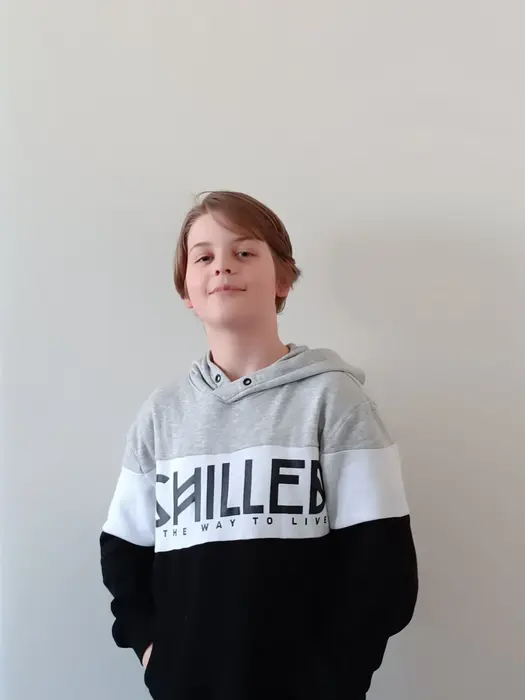
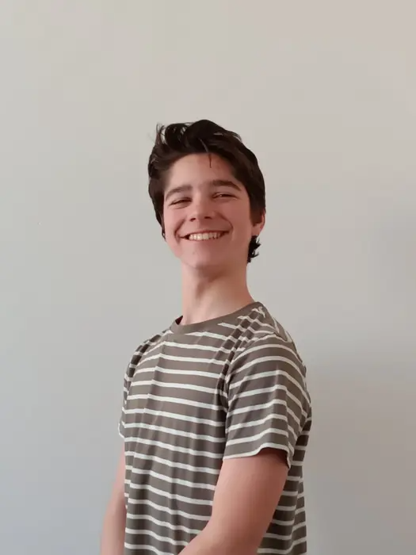

Naši kandidáti  Už na základní škole nadprůměrnou inteligenci, kterou dokázal zúročit v kariéru programátora webových stránek. Poté se ale rozhodl změnit svůj život. Chtěl něco dokázat a změnit svět k lepšímu a tak se stal politikem. Jan Procházka Odmalička jasný lídr, nejdříve profesionální hráč hokeje, později studoval sociologii a dal se na politickou kariéru. Zajímá se především o financování sportu, o EU a čestnou a spravedlivou politiku. Filip Janda  Od dvou let se aktivně zajímá o politiku, vystudoval politologii a psychologii. Výborně komunikuje s veřejností a má jasnou představu kam vést naši stranu. Zajímá se o školství a vlivy sociálních sítí. Jiří Janda